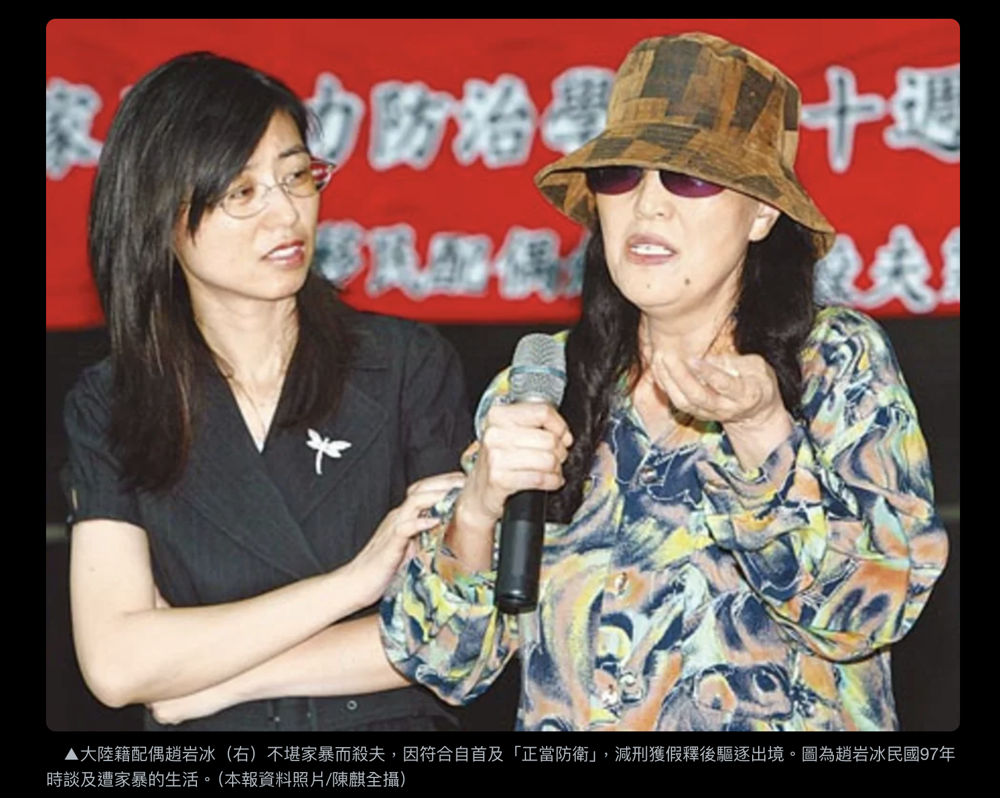
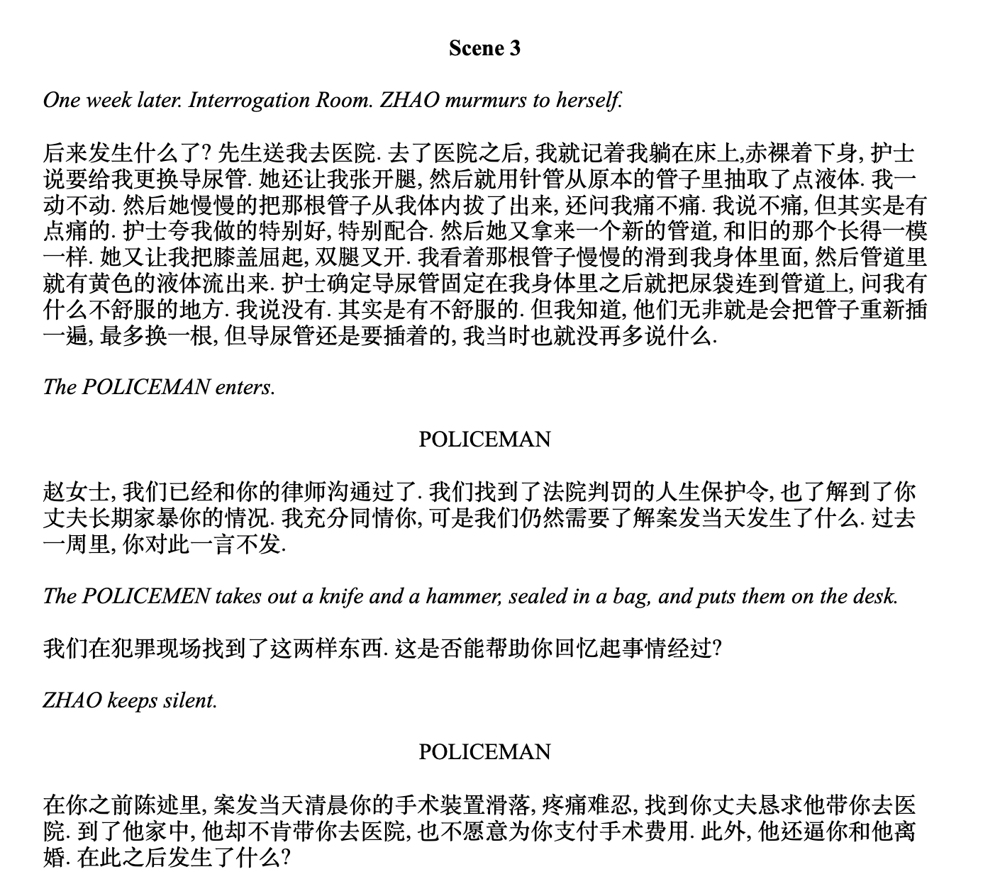

Writing Her Rage
Based on the true story of Yanbing Zhao’s mariticide case (趙岩冰殺夫案), the play reimagines the events through magical realism, intertwining Zhao’s story with the Greek tragedy of Medea. The play is a bilingual play co-written by Yuwen Yang and Jinghe Dorothy Guo.

